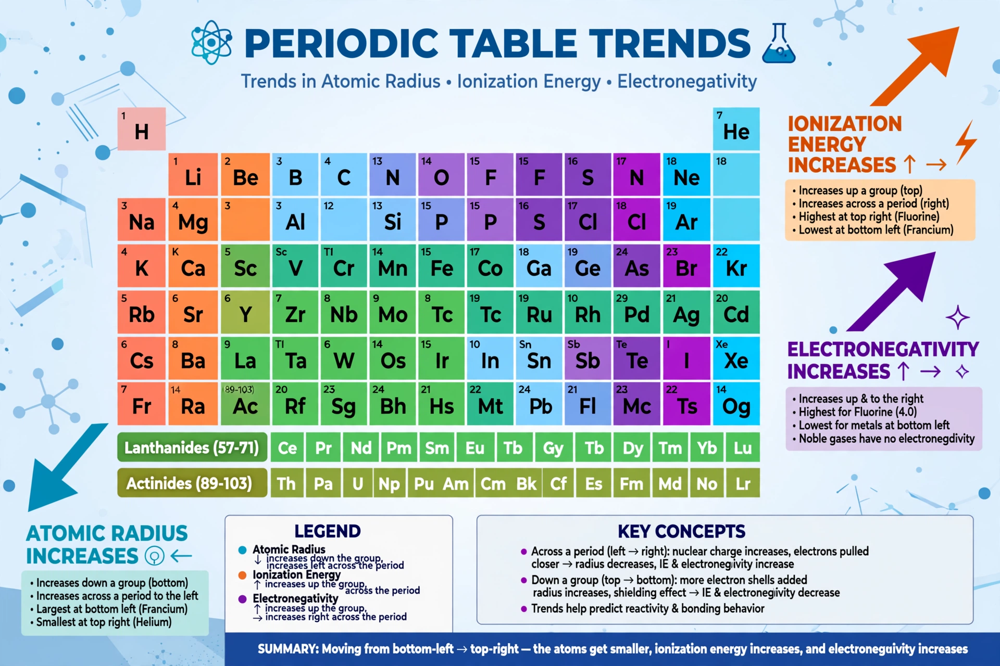

| Periodic trends | |
|---|---|
 Summary of the main periodic trends | |
| Key trends | Atomic radius, ionisation energy, electron affinity, electronegativity, metallic character |
| Basis | Electron configuration, effective nuclear charge, electron shielding |
| Origin | Periodic law of Mendeleev and Meyer (1869–1870) |
Periodic trends are specific, recurring patterns in the properties of chemical elements as arranged in the periodic table. Arising from the periodic repetition of electron configurations, they allow chemists to predict an element's behaviour from its position: how large its atoms are, how tightly they hold electrons, and whether they behave as metals or non-metals.
Trends are explained mainly by two competing quantities. Effective nuclear charge (Zeff) is the net positive charge actually experienced by an outer electron after shielding by inner electrons; across a period, protons are added while shielding barely increases, so Zeff rises and electrons are pulled closer and held tighter. Down a group, new electron shells are added, increasing both the distance of the valence electrons from the nucleus and their shielding, which outweighs the extra nuclear charge.
Atomic radius decreases across a period (rising Zeff contracts the same shell) and increases down a group (each row adds a shell). Cations are smaller than their parent atoms, having lost electrons; anions are larger, owing to increased electron–electron repulsion. The noble gases are conventionally compared by van der Waals radii, which are larger than the covalent radii used for other elements.
The first ionisation energy — the energy needed to remove the outermost electron — generally increases across a period and decreases down a group. The overall pattern has instructive exceptions: dips at group 13 (a higher-energy p electron is removed) and group 16 (paired electrons repel, easing removal) show that subshell structure, not just Zeff, matters. Successive ionisation energies reveal shell structure directly: a huge jump marks the exhaustion of valence electrons.
Electronegativity, the pull of an atom on electrons in a bond, follows ionisation energy: it increases across a period and decreases down a group, reaching its maximum at fluorine (3.98 on the Pauling scale) and its minimum among stable elements at caesium and francium. Electron affinity — the energy change on adding an electron — is generally most exothermic for the halogens, though nitrogen, the noble gases and the alkaline earth metals have near-zero or positive values because of their stable configurations.
Metallic character increases down a group and decreases across a period: the most reactive metals (caesium, francium) sit at the bottom left, the most reactive non-metals (fluorine, oxygen) at the top right. Oxides mirror this division — basic on the left, acidic on the right, amphoteric in the middle — and melting points peak among the transition metals of group 6, where tungsten has the highest melting point of all elements (3,422 °C).
The trends were recognised empirically in the 1860s as chemists sought order among the elements: Dmitri Mendeleev based his 1869 table on them, and Lothar Meyer's atomic-volume curve (1870) made periodicity visible graphically. The modern explanation awaited the electronic theory of the atom in the 20th century.